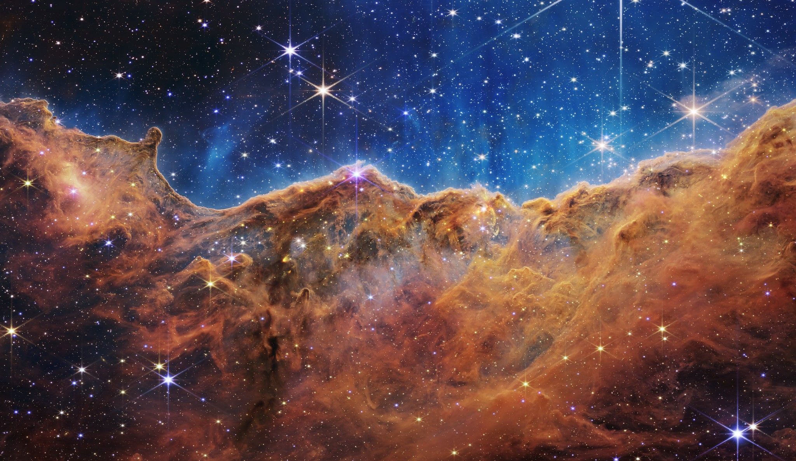
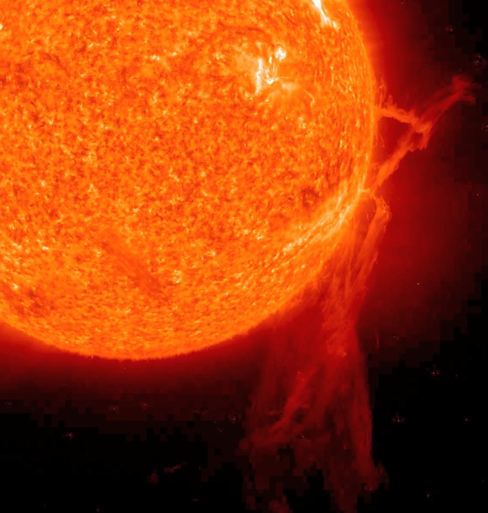

D. Temaj
Home
Publications
Research
Contact
CV
Research work
From stars to the Sun.

Carina Nebula (JWST, 2022). Credit: NASA, ESA, CSA, STScI

Filament eruption from the Sun in EUV, 6 Dec 2010. Credit: NASA/GSFC/SOHO
2023 – Present
PhD in Physics
Technical Univerity Braunschweig University · MPS
Reconstruction of the long-term solar irradiance variability.
2019 – 2022
M.Sc. in Physics and Astronomy
Heidelberg University · HITS
Research on the evolution and final fate of massive stars.
2014 – 2018
B.Sc. in Physics
University of Prishtina
See the full publication list →